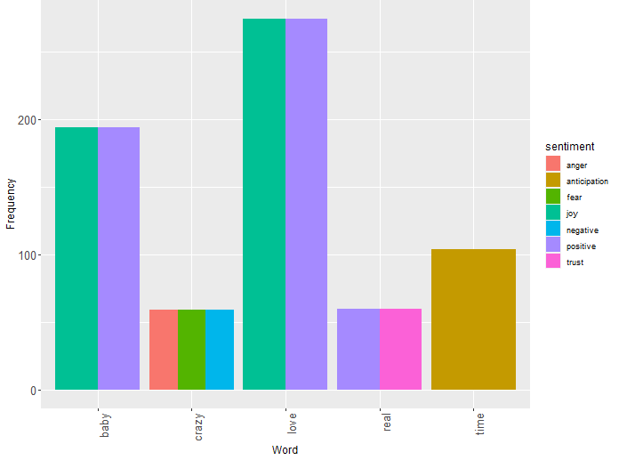
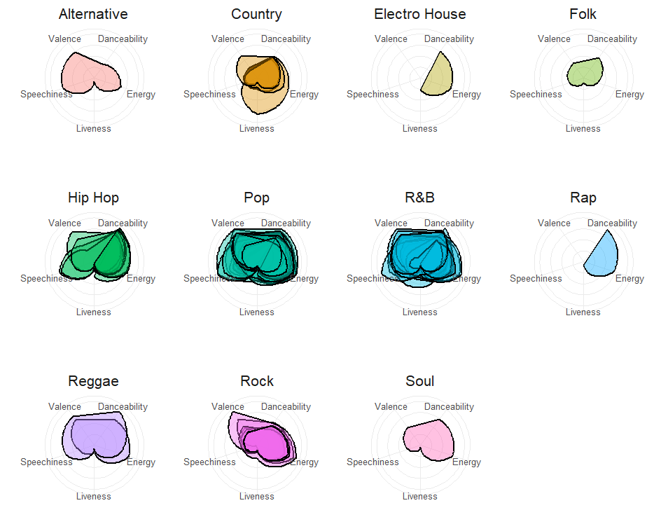
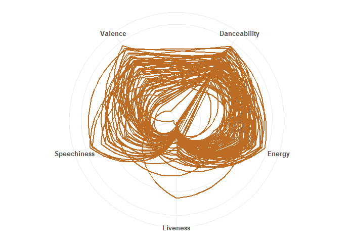
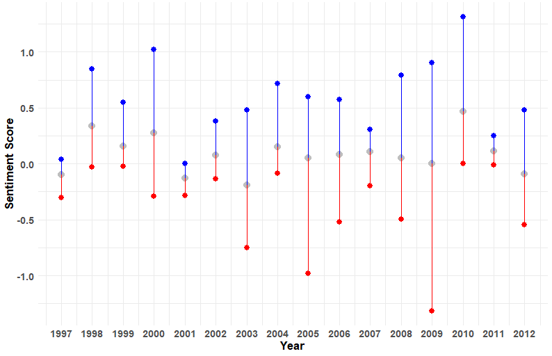

Welcome to Generation Z, a time when individuals born from the mid-1990s to the early 2010s are witnessing and influencing significant shifts in society. From the widespread adoption of smartphones to the rise of social media influencers, from the increasing awareness of environmental sustainability to the push for diversity and inclusion, these years are marked by transformative social, cultural, and technological developments that are shaping the fabric of an era
During the Generation Z era, these were the most popular music genres...
| Genre | Count |
|---|---|
| Alternative | 1 |
| Country | 5 |
| Electro House | 1 |
| Folk | 1 |
| Hip Hop | 9 |
| Pop | 32 |
| R&B | 20 |
| Rap | 1 |
| Reggae | 2 |
| Rock | 7 |
| Soul | 1 |
From these top words and their associated emotions, we can glean insights into prevalent themes and sentiments that reverberated throughout Generation Z, reflecting the cultural, social, and emotional landscape of this era. Notably, the top two emotions, Joy and Positivity, wielded influence over significant events during this time, including the rise of social media platforms as hubs of creativity and connection, the global push for environmental sustainability driven by youth activism, the advancements in technology that have reshaped communication and entertainment, and the growing emphasis on diversity and inclusion in various aspects of society.
Each generation exhibits a diverse array of music genres, each with distinct characteristics such as valence, danceability, speechiness, energy, and liveness. These traits offer insight into the unique sound and feel of the music that defined each era
The Generation Z era, epitomized by its music genres, exhibits a consistent trend characterized by high valence, danceability, speechiness, and energy, with less emphasis on liveness.
Analyzing the sentiment scores of Generation Z throughout the years offers insights into emotional trends, focusing on their minimum, maximum, and average ranges. For example, the sentiment score hit its lowest point in 2009, a year marked by economic recession and global turmoil, including the aftermath of the financial crisis and escalating conflicts in various regions, which stirred feelings of fear and uncertainty among many in Generation Z. Conversely, the sentiment score peaked in 2010, a time of relative recovery and optimism, characterized by technological innovation, cultural diversity, and the emergence of youth-led movements for social change, all contributing to a sense of hope and positivity among Generation Z.
Within Generation Z Generation, the top three songs of the era with the highest positive sentiment scores are...
| Song | Artist | Year Released | Sentiment Score |
|---|---|---|---|
| OMG | Usher | 2010 | 1.31 |
| I Wanna Know | Joe | 2000 | 1.02 |
| I Gotta Feeling | The Black Eyed Peas | 2009 | 0.90 |
Within the Generation Z Generation, the top three songs of the era with lowest negative sentiment scores are...
| Song | Artist | Year Released | Sentiment Score |
|---|---|---|---|
| Boom Boom Pow | The Black Eyed Peas | 2009 | -1.31 |
| Hollaback Girl | Gwen Stefani | 2005 | -0.98 |
| Get Busy | Sean Paul | 2003 | -0.75 |